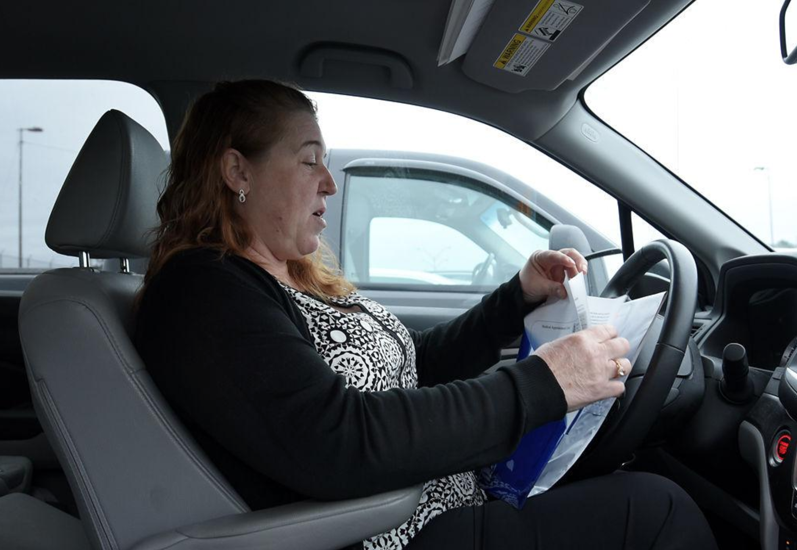
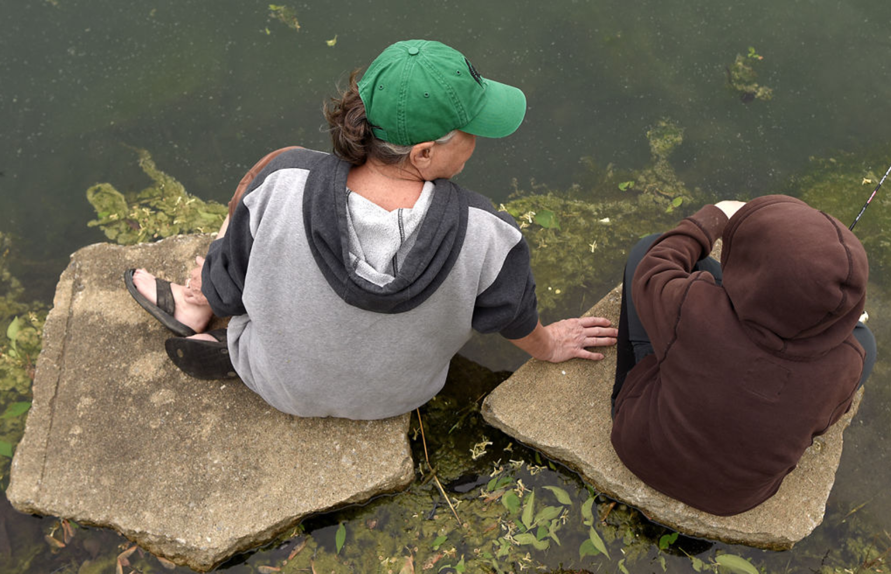
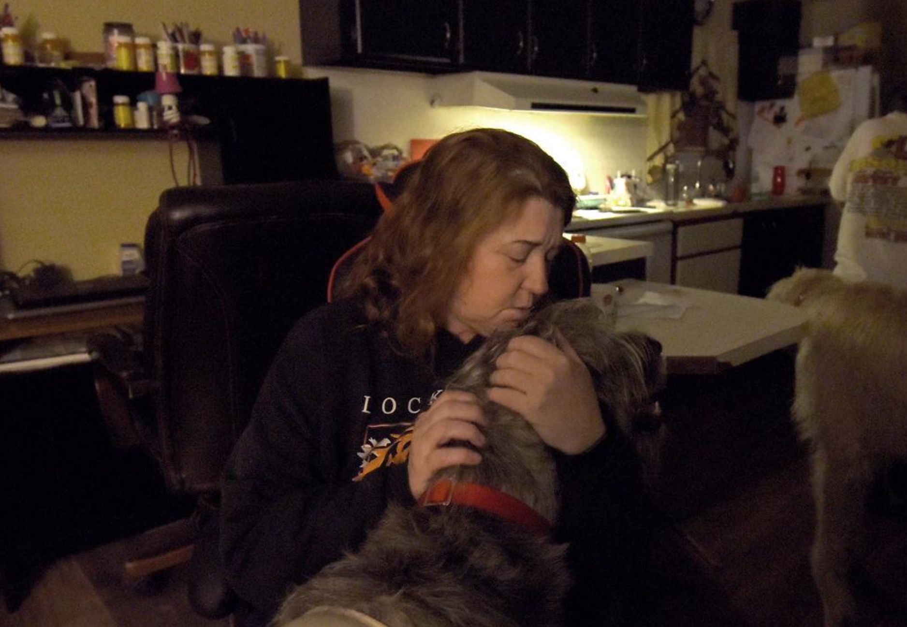

Amy Domonkos adjusts a horse's bridal April 26 at Coyote Hill Christian Children's Home in Columbia. Coyote Hill's riding program interested Domonkos when she moved to the area two years ago becuase she grew up riding horses in Pennsylvania. "When I was young, cartoons didn't exist for me," Domonkos said. After she returned from school, she would take off on horseback and ride for the rest of the afternoon. During a riding session, Coyote Hill director Larry McDaniel asked the group what they felt when riding a horse. "It's the only time I feel free...it's just you and the horse," Domonkos said. "You go where you go. It's the freest I'll ever feel, I think."
Amy Domonkos
Amy Jo Domonkos said that “opportunity knocked” when she came to Columbia two years ago. After two years in the military and seeking medical services for her adoptive son Nathan, 10, she was looking for a home for her family and found one in Stonegate Mobile Home Community in Columbia.
She has been planting roots ever since, whether building a new home from the ground up with her mother, Ramona Domonkos, and son Justin or horseback riding at Coyote Hill Christian Children’s Home.
Amy Domonkos said raising a 10-year-old boy with Treacher Collins syndrome and autism brings new things for the family to learn every day.
Columbia has provided them closer proximity to Nathan’s medical treatments than at their previous home, which came with a two-hour commute to the nearest hospital.
They are considering a move to give Nathan more space to enjoy the same activities she loved growing up in the Pennsylvania countryside, including raising four Irish wolfhounds. One of them, Brody, is Amy’s service dog and has helped her with each transition.
“He’s always been a one-person dog,” she said.
Each step has provided a new adventure for the Domonkos family.
“We’re not like your typical family,” Ramona said. “We like to live each day fully because life is too short.”
Their home is vibrant with conversations and ribbing, with the wolfhounds at the center of every activity.
In the early mornings, Ramona helps her daughter Amy prepare for work while she reassures Nathan over homemade pancakes.
“You’ve got the best grammy in all the world, don’t you, best bud?” Conversations with Nathan are always avenues to talk about Godzilla, his passion in life, they say.
For Nathan, being “special” means “love.” Amy and the family cultivate that love every day, taking each step to ensure he lives a life just like any other 10-year-old kid.
Nathan says he feels the most loved when he’s fishing with Amy at the neighborhood pond, finding the “sweet spots” where they can find the most catfish. He always seems to catch the first fish of the day, which Amy and Ramona celebrate each time.
Throughout the transitions in Amy’s life — in the midst of building a life after the war, building a new home and providing for her family — she says each experience has taught her a lot.
“I wouldn’t trade any of that,” she said. “It’s all about how you make it. If you make it bad, it’s gonna be bad. If you make it good, it’s gonna be good. That’s just what it is.”
ABOVE: Amy Domonkos leads an 11-year-old horse, Eli, to the paddock at Coyote Hill Christian Children’s Home. The equine program at Coyote Hill focuses on students making a connection with horses. “Some people have other goals, but to learn your horse, you have to make that connection,” she said. She enjoys caring for horses and hopes to buy her own.
Ramona Domonkos, right, wakes up Nathan in preparation for school May 15 at Stonegate Mobile Home Community in Columbia. In recent years, Ramona and Amy have been able to learn more about Nathan's abilities and provide him with more opportunities. His morning routine consists of saying a prayer before breakfast, taking medication and kissing Ramona before heading to the bus.
ABOVE: Justin Domonkos hugs Brody, Amy’s service dog, while the family has breakfast at Stonegate Mobile Home Community in Columbia. Since his mother started a full-time job, she has been leaving Brody at home, which affects both of them. “He’s been being a butt lately because he misses his mama,” Justin said. “Like any other kid, he can’t tell you how he’s feeling, so he throws a fit.”
LEFT: Amy Domonkos and Nathan prepare to go fishing in Stonegate Mobile Home Community. Nathan received his first fishing rod a few weeks earlier, and they fish weekly. Amy keeps up a competition for catching the first fish of the day, but Nathan has historically been the winner. He says he knows when he’s close to catching a fish. “I can feel the vibes,“ he said.

Amy Domonkos reads her followup paperwork after an interview with the Transportation Security Administration at the Columbia Regional Airport on March 19. This would have been her first job after getting Brody, her service dog, which she said would be difficult. Regardless, she has chosen to work during the day while her mother, Ramona, stays home. Ramona fills more matriarchic roles of the house, while Amy is more patriarchic. “She does all the man stuff; I do all the women stuff," Ramona said.

When Nathan (above right) came to live with the Domonkos family in 2012, “he said five words,” Amy Domonkos said. “Now, you can hear his wild imagination.” Nathan says he started calling Amy “Mommy” so he could explain her guardian role to his peers in school, but he has always called Ramona Domonkos (above left) “Grammy.”

Amy Domonkos pets her service dog, Brody, before heading to work March 19 at Stonegate Mobile Home Community in Columbia. After realizing how the war had affected her mental health, Brody became a comfort for her. His loyalty has been instrumental to Amy, who calls him "a one-person dog."